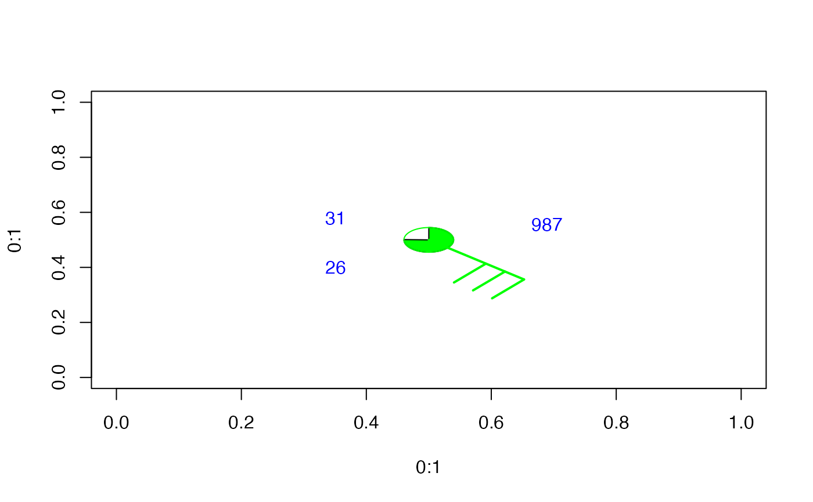

station.symbol.RdAdds a meteorological surface station annotation at the given coordinates. The annotation includes speed and direction of the wind, temperature, pressure, dewpoint ... to a given plot.
x coordinate for location of the annotation.
y coordinate for the annotation.
Wind direction.
Wind speed.
Fill for visibility: 0 = clear skies, 1 = 25% obscured, 2 = 50% obscured, 3 = 75% obscured, 4 = no visibility
Temperature value to plot symbol (must be a scalar). If NULL then no temperature value will be annotated.
Pressure value to plot symbol (must be a scalar). If NULL then no pressure value will be annotated.
Dewpoint Temperature value to plot symbol (must be a scalar). If NULL then no dewpoint value will be annotated.
If TRUE, will plot the usual station symbol with a circle at its base.
Usual plotting parameter.
Adds to a plot.
plot(0:1, 0:1, type="n")
station.symbol(0.5, 0.5, direction=130, speed=30, fill=3,
temp=31, press=987, dewpt=26, cex=5)
